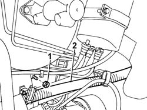
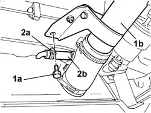

1080E41 TANK - SEPARATOR LINE - R R
- Path
- Procedures > 10 ENGINE UNIT > 1080 EXHAUST EMISSION CONTROL SYSTEM > 1080E EVAPORATION CONTROL SYSTEM > 1080E41 TANK - SEPARATOR LINE - R R
- Kind
- repair procedure (removal / refitting; the operation number is the code)
- Applies to
- engines: 2.0 16V; all production periods
- Interactive page
- https://sloeber94.github.io/elrnDB-fDct/en/#/244000917
Applies to: engines: 2.0 16V; all production periods
 Removing
Removing
 Refitting
RefittingSee in Op. 1048A10
See in Op. 1048A21
- Identify the pipe and disconnect the rapid connector under the petrol vapour separator.
1. Undo the upper filler fixing bolt.
2. Move the filler aside.

Applies to: engines: 2.0 16V; all production periods
- Release the pipe from the retaining springs.
Op. 7055B54 UNDER-ENGINE GUARD - R R
1. Undo the lower fixing bolt (1a) and move the fuel filler (1b) aside.
2. Act on the band (2a) and release the petrol vapour pipe (2b).
- Release the fuel vapour pipe from the retaining spring and remove it.

Applies to: engines: 2.0 16V; all production periods
Refitting
Removing- Fit the fuel vapour pipe in place.
- Fit the pipe removed previously and restore the fastening.
- Tighten the lower fuel filler fixing bolt.
- Lower the vehicle.
- Connect the rapid connector at the bottom of the petrol vapour separator.
- Tighten the upper filler fixing bolt.
See in Op. 1048A21
See in Op. 1048A10